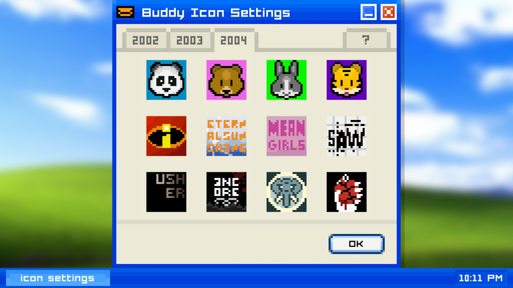
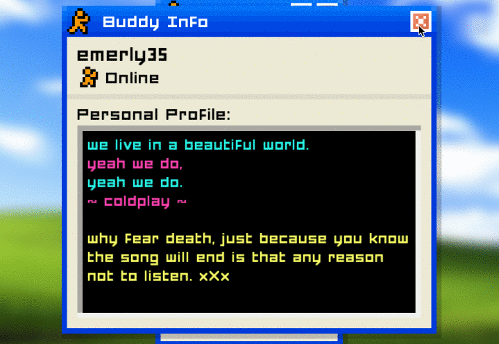
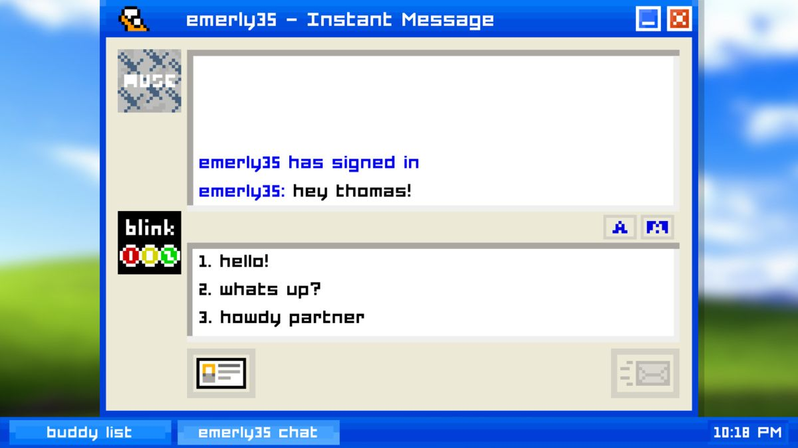

Plot
Emily is Away is a singleplayer, free to play, interactive exprience where players get to choose responses to friends through a fictional MySpace replica.
The story begins in 2002, your senior year of highschool. Your newfound goal is to woo your crush Emily as you struggle to keep in touch after graudating and attending college.
Screenname
When starting up the 'Emily is Away' expreience, you are immediately thrown into an old Windows desktop view with that iconic startup sound. Then, after selecting your chapter, you get to pick your screename and first name that is utilized in your gameplay.
The game's AI will have the fictional in-game characters acknowledge you by your first name, while sometimes, usually during your first meeting, the AI will call you by your screenname.
Icon Customization
After setting up your screenname, you are met with the options to select a profile picture icon of popular bands, movies, etc during that chapter's year.
For example, since the first Saw movie was incredibly popular in its release date of 2004, one of the icon options for the 2004 chapter is the Saw logo.
Buddy List
At this point you are considered "online," and you are met with your Buddy List of fictional in-game characters.
If you click on a person's page, you are met with their latest status update as well as their bio.
Response Options
You are immediately thrown into a chat with Emerly35, who you quickly realize is a highschool friend of yours. At this point you are met with a decision of how to respond.
Some responses in the game hold value. Soon after starting, Emerly35 will ask if you like Coldplay, and since she has Coldplay lyrics on her profile, she will remember whether you like them or not.
